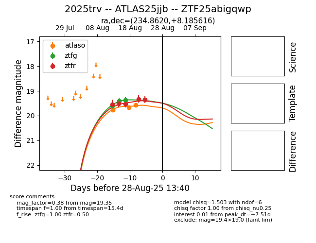

Target 2025trv at 2025-08-21 11:20, see:
FINK: fink-portal.org/ZTF25abigqwp
Lasair: lasair-ztf.lsst.ac.uk/objects/ZTF25abigqwp
ALeRCE: alerce.online/object/ZTF25abigqwp
TNS: wis-tns.org/object/2025trv
YSE: ziggy.ucolick.org/yse/transient_detail/2025trv
alt names
ZTF25abigqwp (ztf,alerce)
2025trv (tns,yse)
ATLAS25jjb (atlas)
coordinates:
equatorial (ra, dec) = (234.8620,+8.18566)
galactic (l, b) = (15.4444,+46.01728)
photometry
last ztfg=19.36, ztfr=19.32
3 ztfg, 4 ztfr detections
